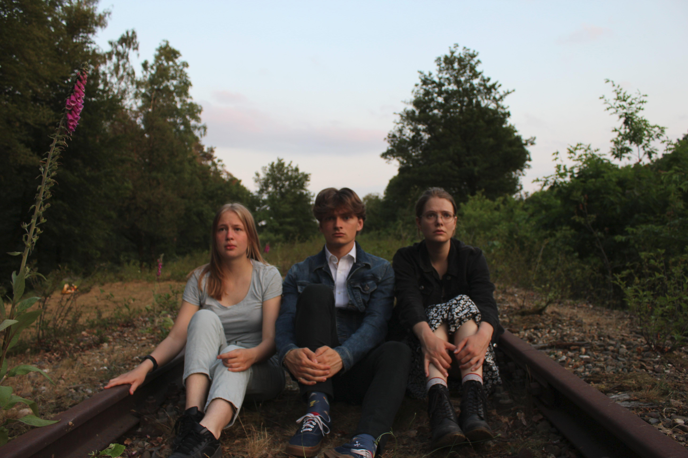

Een theaterstuk dat zich volledig in het trolleyprobleem afspeelt. Tweemaal vertoond: eenmaal als openluchtvoorstelling in park Brakkenstein en eenmaal tijdens het Introfestival van de Radboud Universiteit. Scenario + regie.
Een absurde schaakvariant die wereldwijd veel werd besproken. De regels zijn inmiddels door meer dan 80.000 mensen gezien. Een reactie:
Mooi commentaar over het verlies van de menselijke identiteit door de opkomst van AI.
En nog een:
I’ve heard it said that the best parodies are almost as good as the things they parody (and a sign that the comedians in question both love and understand the thing they are making a parody of). It could be argued that this chess variant is a great parody in that sense, but encoded in the rules of the game itself.
Een digitale wereldkaart waarop lifters elkaar kunnen laten weten waar makkelijk naar andere steden gelift kan worden. Ontvangt jaarlijks 5000 nieuwe recensies. Heeft bijgedragen aan miljoenen kilometers CO2-neutraal reizen, aangezien lifters zitplekken innemen die anders leeg blijven.
Een interactieve whodunit waarin bezoekers door met acteurs te praten erachter proberen te komen wie lijsttrekker David Meijers vermoord heeft. Scenario + acteur.
Een digitale wereldkaart, ontworpen met het oog op eenvoud. Wordt door honderden websites gebruikt vanwege de geringe bestandsgrootte.